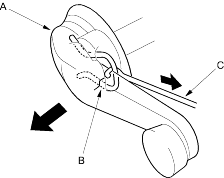
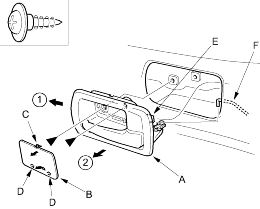
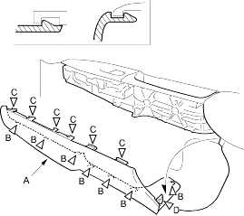

Trim pad remover, Snap-on # A 177 or equivalent, commercially available.
- Lower the glass fully.
- If applicable, remove the regulator handle (A) by pulling the clip (B) out with a wire hook (C).

- Remove the inner handle (A). Take care not to scratch the door panel.
- Pry out on the upper portion of the cover (B) to release the hooks (C and D), then remove the cover.
- Remove the screws.
- Pull out the inner handle forward and out half-way to release the hook (E).
- Disconnect the inner handle rod (F).
| Fastener Locations |
 : Screw, 2 : Screw, 2 |

- Remove the grip cover (A).
- Using a flat-tip screwdriver wrapped with protective tape, insert a flat-tip screwdriver between the cover and door panel at the front edge, then pry out the cover.
- Pry out along the bottom to release the lower tabs (B).
- Pry out along the top to release the upper hooks (C), and rear hook (D).
| Fastener Locations | |
B  : Tab, 7 : Tab, 7 |
C, D : Hook, 7 |
